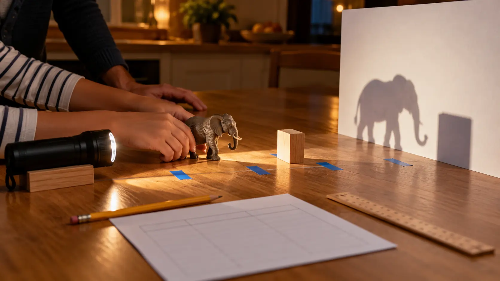

Light
One ordinary LED flashlight secured so it cannot roll. Keep brightness and angle as constant as practical. Never use a laser, flame or hot lamp.
AT HOME · 30 MINUTES · NO-SPEND SCIENCE
Do not lecture about light. Change one distance, measure one shadow and make the child explain what the evidence—not the adult—actually showed.

A shadow forms when an object blocks light traveling toward a surface. The shadow can change when the light, object or screen moves. In this lab, the useful lesson is not memorizing a slogan. It is controlling variables: move one thing, keep the others as steady as possible, measure the result and decide whether the evidence matches the prediction.
The Exploratorium’s K–5 shadow activity asks children how they can change a shadow’s size, shape and position using common materials. This family version narrows the question so a school-night experiment can finish in 30 minutes. Ages 6–8 can compare “smaller/same/larger.” Ages 9–12 can measure height, record distances and explain why one trial is not enough.
Cost is $0 when these items are already at home. Use a table or floor away from stairs, hot surfaces, water, pets and walkways. Adults handle moving furniture, securing the light and deciding whether the room can be dimmed safely. Keep enough ambient light to walk without tripping. Never look into the beam at close range or aim it at another person’s face.
Place the screen upright. Put the object 30 centimeters in front of it and mark the base with tape. Put the flashlight 30 centimeters behind the object, aimed at the center. Block the flashlight so it cannot roll. The exact distances are not sacred; they simply create a repeatable starting point. Write down the actual numbers you used.
Ask: “If the light moves closer to the object but the object and screen stay still, will the shadow become taller, shorter or stay the same?” Each person chooses and gives one reason. Record the predictions without grading them. A prediction is useful even when wrong because it gives the next observation something to answer.
Measure the shadow’s approximate height in the starting position. Then move the flashlight closer to the object—perhaps to 15 centimeters—while leaving the object and screen on their marks. Measure again. Move the flashlight farther away—perhaps to 60 centimeters—and measure a third time. Keep the beam aimed at roughly the same point. If the edge is fuzzy, agree on one measurement rule, such as using the darkest continuous outline.
Choose the result that surprised someone and rebuild it from the original starting marks. Repeat the move. If the measurement changes a little, talk about why: the flashlight angle shifted, the object moved, the screen bent, the shadow edge was fuzzy or the ruler was held differently. Measurement variation is not failure; it is evidence about the setup.
Now hold the light and screen fixed and move the object. Or hold the light and object fixed and move the screen. Before each move, name the one variable being changed. Do only two or three trials. This extension shows that several distances influence the result, but the rule of one deliberate change still applies.
Each child finishes three sentences: “We changed…,” “We kept…,” and “We observed….” Older children add: “One reason our measurements might differ is….” Photograph the setup only if you want a record; the observation sheet works without sharing an image or creating an account. Turn off the flashlight, restore room lighting, remove tape that could become litter and return the walkway to normal.
With a small flashlight acting approximately like a point light, moving it closer to the object generally makes the shadow on a fixed screen larger. The light rays spread from the source, and the object blocks a larger projected region farther away. Moving the light farther from the object generally makes the shadow closer to the object’s own size. A real flashlight is not a perfect point source, so edge sharpness and beam shape can complicate the picture.
Do not force measurements to match a neat diagram. If the result does not follow the prediction, check whether more than one variable moved. Try again. If it still differs, describe what happened instead of rewriting the number. The habit worth keeping is “show the setup, report the result, name the uncertainty.”
Ages 6–8: use three words—smaller, same, larger—and let the child place the tape marks. Count ruler units only if that helps. Ages 9–10: make a table with light distance and shadow height, then repeat one trial. Ages 11–12: graph the three pairs, discuss fair testing and ask whether the object-to-screen distance should also be recorded.
Siblings do not need separate experiments. Give one person the light position, one the ruler, one the record and one the reset check. Rotate after each trial. Adults own electrical and room safety; children own predictions and observations.
Low energy: run only the starting position and one closer-light position. Use “larger or smaller?” and stop after the explanation. Bright room: use a cardboard box on its side as a small shadow stage, leaving the flashlight ventilated and cool; never cover a hot lamp. No ruler: mark the top and bottom of the shadow with removable notes and compare spans. Flashlight missing: use the phone flashlight only if an adult controls it, the device stays cool and the family does not need the phone for an urgent call.
This is already the bad-weather plan. If frustration rises, stop measuring and make one shadow animal or silhouette for two minutes, then close the activity. Do not turn a 30-minute experiment into a forced worksheet. The family can return another night using the four-horizon calendar reset. For a calmer outing version, use the 45-minute library mission to find one age-appropriate light or optics book.
Shape test: rotate the same object while holding distances fixed. Transparent-material test: compare opaque cardboard, translucent paper and clear plastic, describing brightness rather than claiming every material makes a full shadow. Outdoor connection: trace the same person’s shadow at two times of day following the Exploratorium’s outdoor-shadow activity; use sun safety and never look at the Sun. Story version: build a three-shape shadow scene after the measurements, but keep it separate from the controlled test.
If the children want to document the project, use the kids’ camera privacy and handoff check. A camera is optional; observation comes first.
Skip a dim-room setup when anyone is at elevated fall risk, when the only light source gets hot, or when the space cannot be cleared. Modify for visual, motor or sensory needs by increasing ambient light, using larger objects, allowing touch inspection before dimming, or describing the shadow verbally. Children who are frightened by darkness can run the experiment in daylight inside a box stage or skip it entirely. The point is evidence, not endurance.
MAKE THE DAY COUNT
Build the plan your family can finish well, then leave enough energy for the next part of the day.
More family plans